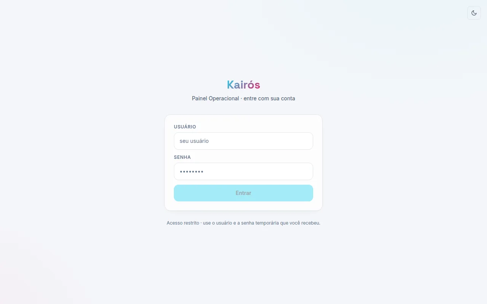
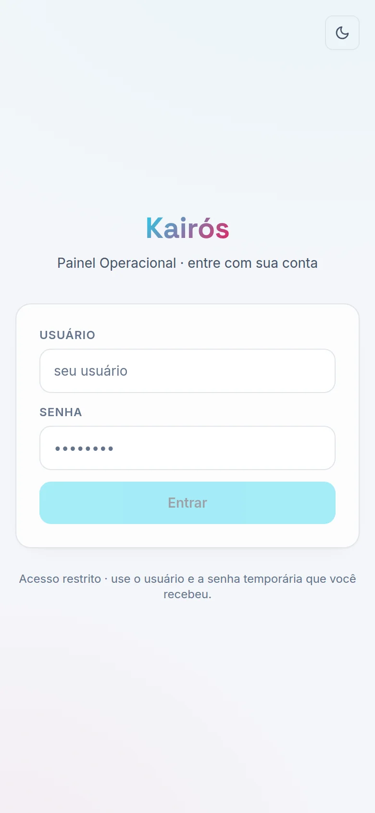

Kairos Digital · SaaS em produção
Painel operacional white-label · multi-tenant · auth real
O mesmo conteúdo vira leitura, audiobook, vídeo e curso.
Você produz uma vez. A Intellecta distribui em quatro portas de entrada — e por trás roda um painel operacional onde cada cargo vê exatamente a própria mesa, a interface veste a sua marca e o dado de cada empresa fica separado por conta.
Agendar demonstraçãoWhatsApp (62) 98492-4326 · resposta em horário comercial · sem compromisso

Veja o conteúdo caminhar até o cliente.
Do cadastro feito pelo vendedor ao cliente aproveitando leitura, audiobook, vídeo ou curso — o fluxo completo, em telas reais.
Cinco níveis de acesso. Ninguém vê além da própria mesa.
Toque no cargo (ou use as setas do teclado) para ver o que ele enxerga e o que fica fora do alcance dele.
Nível 1
Vendedor
- Vê seus clientes, os documentos anexados e as vendas que você registrou.
- Vê os colegas do seu time — o mesmo limite vale na base de dados: só chega o que é da sua gerência.
- Cadastra o cliente com plano, contato e documentos; conversa direto pelo WhatsApp da empresa.
- Não vê equipes de outra gerência nem o nível dev.
Nível 2
Gerente
- Recebe a fila de cadastros do time e libera o cliente com um toque.
- Acompanha vendas do time — hoje, semana e mês — com ranking por vendedor.
- Vê os status da carteira: ativos, em análise e suspensos.
- Não vê outras empresas: cada tenant tem sua operação separada.
Nível 3
Admin
- Opera a empresa inteira: usuários, status de conta e documentos.
- Define a marca do painel — a cor da sua empresa repinta a interface.
- Não vê o nível dev: quem cuida da plataforma fica invisível para o admin do cliente.
Nível 4
Usuário (quem consome)
- Vê o estado claro da própria conta: ativa, em análise ou suspensa — com o próximo passo em cada caso.
- Conta aprovada vira acesso ao conteúdo: leitura, audiobook, vídeo ou curso, do jeito que o momento pedir.
- Não vê o cadastro dos outros: cada conta enxerga só o próprio estado.
Nível 5
Dev
- Visão global entre tenants para diagnóstico da plataforma — sem depender do admin do cliente.
- Invisível para o admin: o nível técnico existe, mas não aparece no painel do cliente.
A interface veste a sua marca.
Escolha uma cor de marca — o cartão abaixo é repintado na hora, como acontece no painel quando o tenant troca. Nenhum componente é reescrito: a cor entra como variável CSS e o todo acompanha.
Bem-vindo à operação
Cor de marca aplicada em runtime: ciano (padrão).
O que muda na sua operação.
Isso não é promessa. Está rodando hoje.
- Em produção agora:
kairos-dashboard-demo.vercel.app— login com autenticação Supabase real, sem mock e sem persona. As capturas desta página saíram dele em 27/11/2026. - Multi-tenant com isolamento por RLS: o dado de uma empresa não vaza para outra — inclusive nos quatro pontos onde costuma vazar (nova policy, chave
service_role, backfill e view comum), já tratados. - Há cliente de produção operando na plataforma — é o produto SaaS mais maduro da Kairos.
- O que fica por dentro da conta (fila do gerente, ranking do time, carteira) você vê na demonstração ao vivo — esta página mostra o acesso real, que está aberto para visita.

O que todo mundo pergunta antes de decidir.
Minha empresa divide tela com outras?
Não. Cada empresa é um tenant com cor de marca própria e dado isolado por regra de segurança na base (RLS). A marca de um cliente nunca aparece no painel do outro.
Vou precisar de desenvolvedor para usar minha marca?
Não. A cor da sua marca entra como variável CSS e repinta o painel inteiro em runtime — nenhum componente precisa ser reescrito. Na demonstração a gente troca a cor na sua frente.
Minha equipe vai ver mais do que deveria?
Não. Existem cinco níveis de acesso: o vendedor vê o próprio time, o gerente vê a fila e o ranking, o admin opera a empresa sem ver o nível dev, e o usuário final vê só o estado da própria conta.
E quando alguém sair da equipe ou eu suspender uma conta?
O status vira “suspensa”: a pessoa cai na tela de espera em vez de entrar num painel vazio, e o histórico continua protegido pelo isolamento entre empresas.
Já tem alguém usando de verdade?
Sim. Há cliente de produção em operação — é o SaaS mais maduro da casa. Na demonstração o fluxo completo roda com dados reais, sem persona e sem cenário montado.
Produza uma vez. Entregue em quatro formatos.
Uma conversa mostra o painel rodando com a sua marca e o fluxo do primeiro conteúdo até o cliente.
Chamar no WhatsApp
ou escaneie com a câmera do celular